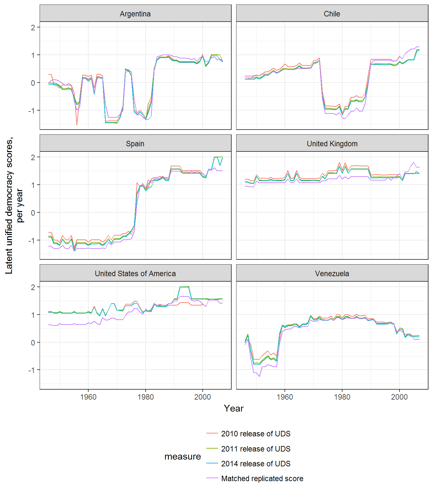

Replicating and Extending the UD scores of Pemstein, Meserve, and Melton
Xavier Marquez
2017-09-26
This package contains data and convenience functions that can be used to replicate and extend the Unified Democracy Scores of Pemstein, Meserve, and Melton (2010). It depends on the package mirt (Chalmers 2012), which can quickly compute full-information factor analyses.
The basic procedure for replicating or extending the UD scores is as follows. First, load the library and prepare the democracy data using the convenience functions prepare_data or prepare_democracy; fit a simple mirt model; and finally, extract the scores. These procedures can be easily condensed into a single call to democracy_scores, but this vignette shows how to use a longer procedure.
Preparing your democracy indexes
Though you can use your own custom democracy indexes to generate latent (unified) democracy scores, the package provides a dataset, democracy, which contains a large number of democracy measures (from more than 30 different datasets, of varying reliability and coverage) that you can use to generate custom unified democracy scores. (Use ?democracy to view which measures are included in the dataset as well as links to their sources; they are also listed in the references below). For example, suppose we wanted to replicate exactly the 2011 release of the UD scores. PMM’s replication data for that release is included in the democracy dataset: we just need to select the variable names ending in _pmm and use the function prepare_democracy
library(QuickUDS)## Loading required package: mirt## Loading required package: stats4## Loading required package: latticelibrary(mirt)
library(dplyr)##
## Attaching package: 'dplyr'## The following objects are masked from 'package:stats':
##
## filter, lag## The following objects are masked from 'package:base':
##
## intersect, setdiff, setequal, unionlibrary(tidyr)
names(democracy)## [1] "extended_country_name" "GWn"
## [3] "cown" "in_GW_system"
## [5] "year" "blm"
## [7] "bmr_democracy" "bmr_democracy_omitteddata"
## [9] "bnr" "bnr_extended"
## [11] "doorenspleet" "fh_electoral"
## [13] "fh_total_reversed" "gwf_democracy"
## [15] "gwf_democracy_extended" "gwf_democracy_extended_strict"
## [17] "gwf_democracy_strict" "kailitz_binary"
## [19] "kailitz_tri" "lexical_index"
## [21] "magaloni_democracy" "magaloni_democracy_extended"
## [23] "mainwaring" "pacl"
## [25] "PEPS1i" "PEPS1q"
## [27] "PEPS1v" "PEPS2i"
## [29] "PEPS2q" "PEPS2v"
## [31] "PIPE_democracy" "PIPE_regime"
## [33] "pitf" "pitf_binary"
## [35] "pmm_arat" "pmm_blm"
## [37] "pmm_bollen" "pmm_fh"
## [39] "pmm_hadenius" "pmm_mainwaring"
## [41] "pmm_munck" "pmm_pacl"
## [43] "pmm_polity" "pmm_polyarchy"
## [45] "pmm_prc" "pmm_vanhanen"
## [47] "polity" "polity2"
## [49] "polyarchy_contestation_dimension" "polyarchy_inclusion_dimension"
## [51] "polyarchy_original_contestation" "polyarchy_original_polyarchy"
## [53] "prc" "reign_democracy"
## [55] "svolik_democracy" "uds_2010_mean"
## [57] "uds_2010_median" "uds_2011_mean"
## [59] "uds_2011_median" "uds_2014_mean"
## [61] "uds_2014_median" "ulfelder_democracy"
## [63] "ulfelder_democracy_extended" "utip_dichotomous"
## [65] "utip_dichotomous_strict" "utip_trichotomous"
## [67] "vanhanen_competition" "vanhanen_democratization"
## [69] "vanhanen_participation" "wgi_democracy"
## [71] "wth_democ1" "wth_democrobust"
## [73] "v2x_polyarchy" "v2x_api"
## [75] "v2x_mpi" "v2x_libdem"
## [77] "v2x_partipdem" "v2x_delibdem"
## [79] "v2x_egaldem"indexes <- names(democracy)[grep("pmm",names(democracy))]
indexes # The measures of democracy used to generate the 2011 release of the UDS## [1] "pmm_arat" "pmm_blm" "pmm_bollen" "pmm_fh"
## [5] "pmm_hadenius" "pmm_mainwaring" "pmm_munck" "pmm_pacl"
## [9] "pmm_polity" "pmm_polyarchy" "pmm_prc" "pmm_vanhanen"data <- prepare_democracy(indexes)You can use a dplyr::select helper to simplify this procedure:
data <- prepare_democracy(matches("pmm"))The function prepare_democracy selects the appropriate colums from the democracy dataset, gets rid of “empty rows” (country-years that have no measurements of democracy for the chosen indexes; such patterns will make mirt fail), and runs prepare_data on the remaining indexes.
prepare_data transforms selected democracy indexes into ordinal variables suitable for use with mirt, mostly following the advice in Pemstein, Meserve, and Melton’s original article (2010). In particular, prepare_data will try to do the following on any dataset (whether the included democracy dataset or your own dataset of democracy scores):
If a selected index contains the string
arat, the function assumes the index is Arat (1991)’s 0-109 democracy score, and cuts it into 7 intervals with the following cutoffs: 50, 60, 70, 80, 90, and 100. The resulting score is ordinal from 1 to 8 (following Pemstein, Meserve, and Melton’s advice).If a selected index contains the string
bollen, the function assumes the index is Bollen’s (2001)’s 0-100 democracy score, and cuts it into 10 intervals with the following cutoffs: 10,20,30,40,50,60,70,80, and 90. The resulting score is ordinal from 1 to 10 (following Pemstein, Meserve, and Melton’s advice).If a selected index contains the string
wgi, the function assumes the index is the World Governance Indicator’s “Voice and Accountability” index, and it will cut it into 20 categories. The resulting score is ordinal from 1 to 20.If a selected index contains the string
hadenius, the function assumes the index is Hadenius (1992)’s 0-10 democracy score, and it will cut it into 8 intervals with the following cutoffs: 1, 2,3,4, 7, 8, and 9. The resulting score is ordinal from 1 to 8 (following Pemstein, Meserve, and Melton’s advice).If the selected index contains the string
munck, the function assumes the index is Munck’s (2009)’s 0-1 democracy score, and it will cut it into 4 intervals with the following cutoffs: 0.5,0.5,0.75, and 0.99. The resulting score is ordinal from 1 to 4 (following Pemstein, Meserve, and Melton’s advice).If the selected index contains the string
peps, the function assumes the index is one of the variants of the Participation-Enhanced Polity Score (Moon et al 2006), and it will round its value (eliminating the decimal) and then transform it into an ordinal measure from 1 to 21.If the selected index contains the string
polity, the function assumes this is the Polity IV score, and it set any values below -10 to NA and then transform them into an ordinal measure from 1 to 21.If the selected index contains the string
polyarchy_inclusion_dimensionorpolyarchy_contestation_dimension, the function assumes this is one of the two dimensions of polyarchy estimated by Coppedge, Alvarez, and Maldonado (2008), and it will cut it into 20 categories. The resulting score is ordinal from 1 to 20.If the selected index contains the string
v2x, the function assumes this is one of the v2x_ continuous indexes of democracy from the V-Dem dataset (Coppedge et al 2015), and it will cut it into 20 categories. The resulting score is ordinal from 1 to 20.If the selected index contains the string
vanhanen_democratizationorvanhanen_pmm, the function assumes this is Vanhanen’s (2012)’s index of democratization, and it will cut it into 8 intervals with the following cutoffs: 5,10,15,20,25,30, and 35 (following Pemstein, Meserve, and Melton’s advice). The resulting score is ordinal from 1 to 8.
prepare_data will also work on column names that contain the following strings:
-
blm(assumes it’s from Bowman, Lehoucq, and Mahoney 2005) -
bmr(assumes it’s from Boix, Miller, and Rosato 2012) -
doorenspleet(assumes it’s from Doorenspleet 2000) -
e_v2x(assumes it’s one of the “ordinal” indexes from the V-dem project, Coppedge at al 2015) -
fhorfreedomhouse(assumes it’s from Freedom House - must be reversed so that “more freedom” is higher) -
gwf(assumes it’s from Geddes, Wright, and Frantz 2014 - the dichotomous democracy indicator only) -
kailitz(assumes it’s from from Kailitz 2013 - democracy/electoral autocracy/non-democracy indicator only) -
liedorlexical_index(assumes it’s from Skaaning, Gerring, and Bartusevičius 2015) -
mainwaring(assumes it’s from Mainwaring and Perez Linan 2008) -
magaloni(assumes it’s from Magaloni, Min and Chu 2013) -
pacl(assumes it’s from Cheibub, Gandhi, and Vreeland 2010) -
pitf(assumes it’s the measure of democracy used in Goldstone et. al 2010 or Taylor and Ulfelder 2015) -
polyarchy(assumes it’s from Coppedge and Reinicke 1991) -
prc(assumes it’s from Gasiorowski 1996 or Reich 2002) -
przeworski(assumes it’s the “regime” variable from Przeworski 2010) -
reign(assumes it’s the democracy/dictatorship indicator from Bell 2016) -
svolik(assumes it’s the democracy/dictatorship indicator from Svolik 2012) -
ulfelder(assumes it’s from Ulfelder 2012) -
utip(assumes it’s from Hsu 2008) -
wahman_teorell_hadeniusorwth(assumes it’s a democracy/non-democracy indicator from Wahman, Teorell, and Hadenius 2013).
In each of these cases the function prepare_data transforms the values of the scores by running as.numeric(unclass(factor(x))), which transforms each index into ordinal variables from 1 to the number of categories.
If you are using democracy indexes not included in the democracy dataset, or want to use your own custom measures of democracy, or transform them in a very particular way, you simply need to ensure that there are no “blank” country-years in your data (i.e., country-years without any democracy measurements) and that the indexes you are using are ordinal measures from 1 to N with every category present in the data. mirt is pretty flexible and forgiving: it will accept ordinal variables in any range and will attempt to transform your indexes so that every category is within a distance of 1 of its neighboring categories. But it’s useful to have a good sense of what the algorithm is doing to your data before you begin!
Fitting a democracy model
You then fit the model as follows:
replication_2011_model <- mirt(data[ , indexes], model = 1,
itemtype = "graded", SE = TRUE,
verbose = FALSE)This just tells mirt to fit a one-factor, full information graded response model like that in Pemstein, Meserve, and Melton 2010, and to calculate the standard errors for the coefficients. (See ?mirt for details of the many options you can use to tweak your model).
Fitting this model is reasonably fast:
replication_2011_model@time## TOTAL: Data Estep Mstep SE Post
## 8.65 0.19 0.65 6.99 0.78 0.00There is a convenient wrapper for the entire procedure:
replication_2011_model <- democracy_model(matches("pmm"), verbose = FALSE)We can easily check that this model converges and that accounts for most of the variance in the democracy indexes:
replication_2011_model##
## Call:
## mirt::mirt(data = data %>% select(cols$measures), model = 1,
## itemtype = "graded", SE = TRUE, verbose = verbose, technical = technical)
##
## Full-information item factor analysis with 1 factor(s).
## Converged within 1e-04 tolerance after 151 EM iterations.
## mirt version: 1.25
## M-step optimizer: BFGS
## EM acceleration: Ramsay
## Number of rectangular quadrature: 61
##
## Information matrix estimated with method: Oakes
## Condition number of information matrix = 82004.52
## Second-order test: model is a possible local maximum
##
## Log-likelihood = -55697.78
## Estimated parameters: 94
## AIC = 111583.6; AICc = 111585.5
## BIC = 112252.9; SABIC = 111954.1summary(replication_2011_model)## F1 h2
## pmm_arat 0.901 0.812
## pmm_blm 0.992 0.985
## pmm_bollen 0.951 0.904
## pmm_fh 0.941 0.885
## pmm_hadenius 0.986 0.973
## pmm_mainwaring 0.994 0.989
## pmm_munck 0.955 0.912
## pmm_pacl 0.967 0.936
## pmm_polity 0.954 0.911
## pmm_polyarchy 0.965 0.932
## pmm_prc 0.969 0.938
## pmm_vanhanen 0.928 0.861
##
## SS loadings: 11.036
## Proportion Var: 0.92
##
## Factor correlations:
##
## F1
## F1 1And we can then extract the latent democracy scores, either via the mirt package’s fscore function, or via this package’s convenient wrapper democracy_scores (which returns a tidy dataset with the latent scores, binds them to the appropriate country-years and automatically calculates 95% confidence intervals):
replication_2011_scores <- fscores(replication_2011_model,
full.scores = TRUE,
full.scores.SE = TRUE)
# Not a data frame, no country-years:
str(replication_2011_scores)## num [1:9137, 1:2] -1.89 -1.89 -1.57 -1.57 -1.45 ...
## - attr(*, "dimnames")=List of 2
## ..$ : NULL
## ..$ : chr [1:2] "F1" "SE_F1"replication_2011_scores <- democracy_scores(model = replication_2011_model)
# A data frame with confidence intervals:
replication_2011_scores## # A tibble: 9,137 x 21
## extended_country_name year GWn cown uds_2010_mean uds_2011_mean
## <chr> <dbl> <dbl> <int> <dbl> <dbl>
## 1 Afghanistan 1946 700 700 -1.840259 -1.864836
## 2 Afghanistan 1947 700 700 -1.839920 -1.859613
## 3 Afghanistan 1948 700 700 -1.536447 -1.561680
## 4 Afghanistan 1949 700 700 -1.526101 -1.560645
## 5 Afghanistan 1950 700 700 -1.391321 -1.457614
## 6 Afghanistan 1951 700 700 -1.523480 -1.562312
## 7 Afghanistan 1952 700 700 -1.521900 -1.562706
## 8 Afghanistan 1953 700 700 -1.514145 -1.560713
## 9 Afghanistan 1954 700 700 -1.528626 -1.570623
## 10 Afghanistan 1955 700 700 -1.393404 -1.459222
## # ... with 9,127 more rows, and 15 more variables: uds_2014_mean <dbl>,
## # in_GW_system <lgl>, z1 <dbl>, se_z1 <dbl>, z1_pct975 <dbl>,
## # z1_pct025 <dbl>, z1_adj <dbl>, z1_pct975_adj <dbl>,
## # z1_pct025_adj <dbl>, z1_as_prob <dbl>, z1_pct975_as_prob <dbl>,
## # z1_pct025_as_prob <dbl>, z1_adj_as_prob <dbl>,
## # z1_pct975_adj_as_prob <dbl>, z1_pct025_adj_as_prob <dbl>The entire procedure can be performed in one call:
replication_2011_scores <- democracy_scores(matches("pmm"), verbose = FALSE)We can also check that these scores are, in fact, perfectly correlated with Pemstein, Meserve, and Melton’s 2011 UDS release:
cor(replication_2011_scores %>% select(matches("uds"), z1), use = "pairwise")## uds_2010_mean uds_2011_mean uds_2014_mean z1
## uds_2010_mean 1.0000000 0.9917366 0.9917310 0.9914264
## uds_2011_mean 0.9917366 1.0000000 0.9989172 0.9996935
## uds_2014_mean 0.9917310 0.9989172 1.0000000 0.9986355
## z1 0.9914264 0.9996935 0.9986355 1.0000000(For more details on the relationship between the original UD scores and the replicated scores produced using this method, see my working paper Marquez 2016).
Extending the model
Now suppose you want to create a new Unified Democracy score derived from Pemstein, Meserve, and Melton’s original source measures but that also maximizes the democracy information available in other datasets, including:
- The dichotomous indicator of democracy in the Boix, Miller and Rosato dataset of political regimes (Boix Miller and Rosato 2012)
- The full extent of the Political Regime Change dataset (Gasiorowski 1996 and Reich 2002), Vanhanen’s index of democratization (Vanhanen 2012), Bowman, Lehoucq, and Mahoney’s data on Central America (Bowman, Lehoucq, and Mahoney 2005) and Mainwaring, Brinks and Perez-Linan’s data on Latin America (Mainwaring, Brinks, and Perez-Linan 2008), all of which go back to the beginning of the 20th century or before but are not used to the fullest extent in the official UD releases.
- One of the new V-Dem indexes of democracy, ordinal or continuous (Coppedge et al 2015)
- Renske Doorenspleet’s dichotomous indicator of democracy including suffrage info (Doorenspleet 2000)
- The World Governance Indicator’s latest Voice and Accountability index
- The most current release of Freedom House’s data, to 2016, and the most current Polity data, also to 2016
- The indicators of democracy in various autocratic regime datasets (Geddes, Wright, and Frantz 2014; Svolik 2012; Kalitz 2013; Wahman, Teorell and Hadenius 2013)
- The 7-level Lexical Index of Democracy and Autocracy (Skaaning, Gerring, and Bartusevičius. 2015)
- Jay Ulfelder’s dichotomous indicator of democracy (Ulfelder 2012)
This package makes the process extremely simple:
indexes <- c("pmm_arat","blm","bmr_democracy",
"pmm_bollen","doorenspleet","wgi_democracy","fh_total_reversed",
"gwf_democracy","pmm_hadenius","kailitz_tri","lexical_index",
"mainwaring","pmm_munck","pacl",
"polity2","polyarchy_original_contestation","prc",
"svolik_democracy","ulfelder_democracy",
"v2x_polyarchy", "vanhanen_democratization","wth_democ1")
extended_model <- democracy_model(indexes, verbose = FALSE)
summary(extended_model)## F1 h2
## pmm_arat 0.949 0.901
## blm 0.985 0.970
## bmr_democracy 0.986 0.973
## pmm_bollen 0.958 0.918
## doorenspleet 0.964 0.930
## wgi_democracy 0.963 0.928
## fh_total_reversed 0.953 0.908
## gwf_democracy 0.966 0.932
## pmm_hadenius 0.979 0.959
## kailitz_tri 0.956 0.914
## lexical_index 0.964 0.929
## mainwaring 0.983 0.966
## pmm_munck 0.934 0.872
## pacl 0.966 0.934
## polity2 0.932 0.869
## polyarchy_original_contestation 0.959 0.920
## prc 0.978 0.956
## svolik_democracy 0.970 0.940
## ulfelder_democracy 0.975 0.950
## v2x_polyarchy 0.971 0.943
## vanhanen_democratization 0.936 0.877
## wth_democ1 0.989 0.978
##
## SS loadings: 20.469
## Proportion Var: 0.93
##
## Factor correlations:
##
## F1
## F1 1extended_scores <- democracy_scores(model = extended_model)mirt will stop by default after 500 EM cycles, but some models will take longer to converge. If your model has not converged after 500 iterations of the algorithm, you can try increasing the number of cycles with the technical option.
Use ?mirt for more details.
One important point to note about latent variable democracy scores is that they are normalized with mean zero and standard deviation one, so a score of 1 just means that the country-year is 1 standard deviation more democratic than the average country-year in the sample. But this means that adding extra country-years to our model will typically result in scores that have a higher mean (though usually smaller standard errors) than the original UD model, given that the world has become substantially more democratic over the last two centuries:
countries <- c("United States of America",
"United Kingdom","Argentina",
"Chile","Venezuela","Spain")
data <- extended_scores %>%
filter(extended_country_name %in% countries) %>%
tidyr::gather(measure, zscore, uds_2010_mean:uds_2014_mean, z1) %>%
filter(!is.na(zscore), year >=1946, year < 2008) %>%
mutate(measure = plyr::mapvalues(measure,
c("uds_2010_mean",
"uds_2011_mean",
"uds_2014_mean",
"z1_matched"),
c("2010 release of UDS",
"2011 release of UDS",
"2014 release of UDS",
"Replicated score")))## The following `from` values were not present in `x`: z1_matchedlibrary(ggplot2)
ggplot(data = data,
aes(x = year, y = zscore, color = measure)) +
geom_path() +
theme_bw() +
labs(x = "Year", y = "Latent unified democracy scores,\nper year") +
theme(legend.position="bottom") +
guides(color = guide_legend(ncol = 1),fill = guide_legend(nrow = 1)) +
facet_wrap(~extended_country_name, ncol = 2) 
If necessary, one can therefore “match” the extended scores to the official UD release by substracting the mean of the extended scores for the period of the UD release one wants to match from the extended scores (that is, making the mean of the extended scores equal to zero for the period of adjustment):
data <- extended_scores %>%
filter(!is.na(uds_2014_mean)) %>%
mutate(z1_matched = z1 - mean(z1, na.rm = TRUE),
z1_pct975_matched = z1_pct975 - mean(z1, na.rm = TRUE),
z1_pct025_matched = z1_pct025 - mean(z1, na.rm = TRUE))
data <- data %>%
filter(extended_country_name %in% countries) %>%
tidyr::gather(measure, zscore, uds_2010_mean:uds_2014_mean, z1_matched) %>%
filter(!is.na(zscore), year >=1946, year < 2008) %>%
mutate(measure = plyr::mapvalues(measure,
c("uds_2010_mean",
"uds_2011_mean",
"uds_2014_mean",
"z1_matched"),
c("2010 release of UDS",
"2011 release of UDS",
"2014 release of UDS",
"Matched replicated score")))
library(ggplot2)
ggplot(data = data,
aes(x = year, y = zscore, color = measure)) +
geom_path() +
theme_bw() +
labs(x = "Year", y = "Latent unified democracy scores,\nper year") +
theme(legend.position="bottom") +
guides(color = guide_legend(ncol=1),fill = guide_legend(nrow=1)) +
facet_wrap(~extended_country_name,ncol=2) 
In the graph above, we can see that the 2014 release of the UDS seems to overestimate the degree of democracy in the USA in the early decades of 1950 relative to the “extended” scores.
These scores have a more natural interpretation when transformed to a 0-1 index using the cumulative distribution function as the “probability that a country-year is democratic” (so the 0 is now a natural minimum, and 1 a natural maximum). These indexes are automatically produced by the function democracy_scores; they are in the column z1_as_prob of the output, and are produced by applying the pnorm function to z1, as follows:
extended_scores <- extended_scores %>%
mutate(index = pnorm(z1),
index_pct025 = pnorm(z1_pct025),
index_pct975 = pnorm(z1_pct975))
# These are equal to z1_as_prob, which is automatically calculated:
extended_scores %>% filter(index != z1_as_prob)## # A tibble: 0 x 24
## # ... with 24 variables: extended_country_name <chr>, year <dbl>,
## # GWn <dbl>, cown <int>, uds_2010_mean <dbl>, uds_2011_mean <dbl>,
## # uds_2014_mean <dbl>, in_GW_system <lgl>, z1 <dbl>, se_z1 <dbl>,
## # z1_pct975 <dbl>, z1_pct025 <dbl>, z1_adj <dbl>, z1_pct975_adj <dbl>,
## # z1_pct025_adj <dbl>, z1_as_prob <dbl>, z1_pct975_as_prob <dbl>,
## # z1_pct025_as_prob <dbl>, z1_adj_as_prob <dbl>,
## # z1_pct975_adj_as_prob <dbl>, z1_pct025_adj_as_prob <dbl>, index <dbl>,
## # index_pct025 <dbl>, index_pct975 <dbl>It is also possible to to set the cutpoint for this index at, for example, the average cutpoint in the latent variable of the dichotomous indexes of democracy (so that 0.5 correponds more naturally to the point at which a regime could be either democratic or non-democratic according to the dichotomous measures of democracy included in your model). These scores are also automatically calculated (they are in the column z1_adj) but they can also be manuallyadded as follows:
cutpoints_extended <- cutpoints(extended_model)
cutpoints_extended## # A tibble: 131 x 6
## variable estimate pct025 pct975 se num_obs
## <chr> <dbl> <dbl> <dbl> <dbl> <int>
## 1 pmm_arat -0.80723567 -0.80733175 -0.807148087 4.468415e-05 3873
## 2 pmm_arat -0.45816575 -0.44963891 -0.465937831 3.965348e-03 3873
## 3 pmm_arat 0.01956491 0.04774237 -0.006118384 1.310372e-02 3873
## 4 pmm_arat 0.35159962 0.40167601 0.305955788 2.328767e-02 3873
## 5 pmm_arat 0.79706665 0.88392571 0.717896013 4.039318e-02 3873
## 6 pmm_arat 1.68926666 1.85293789 1.540082976 7.611413e-02 3873
## 7 blm 0.33482793 0.51535168 0.214103455 6.159412e-02 505
## 8 blm 0.98943475 1.47359154 0.665657010 1.651927e-01 505
## 9 bmr_democracy 0.55579853 0.63064980 0.489542142 3.380428e-02 16987
## 10 pmm_bollen -0.94261243 -0.94356834 -0.941858517 3.846498e-04 510
## # ... with 121 more rowsdichotomous_cutpoints <- cutpoints_extended %>%
group_by(variable) %>%
filter(n() == 1)
dichotomous_cutpoints## # A tibble: 7 x 6
## # Groups: variable [7]
## variable estimate pct025 pct975 se num_obs
## <chr> <dbl> <dbl> <dbl> <dbl> <int>
## 1 bmr_democracy 0.5557985 0.6306498 0.4895421 0.03380428 16987
## 2 doorenspleet 0.8800381 0.9864210 0.7852954 0.04833808 13009
## 3 gwf_democracy 0.5937798 0.6744796 0.5222004 0.03652010 7954
## 4 pacl 0.5666457 0.6418725 0.4995961 0.03420898 9115
## 5 svolik_democracy 0.5636332 0.6415910 0.4944819 0.03528126 8555
## 6 ulfelder_democracy 0.5294266 0.6073766 0.4609674 0.03492814 7684
## 7 wth_democ1 0.7514143 0.9235143 0.6105236 0.07188299 7429avg_dichotomous <- mean(dichotomous_cutpoints$estimate)
avg_dichotomous## [1] 0.6343909extended_scores <- extended_scores %>% mutate(adj_z1 = z1 - avg_dichotomous,
adj_pct025 = z1_pct025 - avg_dichotomous,
adj_pct975 =z1_pct975 - avg_dichotomous,
index = pnorm(adj_z1),
index_pct025 = pnorm(adj_pct025),
index_pct975 = pnorm(adj_pct975))
ggplot(data = extended_scores %>% filter(extended_country_name %in% countries),
aes(x= year, y = index,
ymin = index_pct025, ymax = index_pct975)) +
geom_path() +
geom_ribbon(alpha=0.2) +
theme_bw() +
labs(x = "Year", y = "Latent unified democracy scores,\nper year\nconverted to 0-1 probability scale") +
theme(legend.position="bottom") +
guides(color = guide_legend(ncol=1),fill = guide_legend(nrow=1)) +
geom_hline(yintercept=0.5,color="red") +
facet_wrap(~extended_country_name,ncol=2) 
A pre-computed version of the extended UDS scores, with data from all the indexes mentioned above, plus the participation-enhanced Polity Scores of Moon et al (2006), a trichotomous democracy indicator calculated from Magaloni, Min, and Chu’s “Autocracies of the World” datset (Magaloni, Min and Chu 2013), a dichotomous democracy indicator calculated from Hsu (2008), the REIGN dataset of Bell (2016), and an indicator of democracy used by the Political Instability Task Force (Goldstein et. al 2010; Taylor and Ulfelder 2015), is included with the package; it can be loaded by simply typing extended_uds. Use ?extended_uds to examine the documentation for all its variables; see my working paper (Marquez 2016) for more detail on the data and its uses.
Extracting useful information from the model
The mirt package offers a great number of powerful tools to examine and diagnose the fitted model, including functions to extract model cutpoints and item information curves. But this package also contains two convenience functions that wrap mirt tools to quickly extract democracy rater discrimination parameters, rater cutoffs, and rater information curves from a model produced by democracy_model in a tidy data frame format suitable for graphing:
replication_2011_cutpoints <- cutpoints(replication_2011_model, type ="score")
replication_2011_cutpoints## # A tibble: 82 x 6
## variable estimate pct025 pct975 se num_obs
## <chr> <dbl> <dbl> <dbl> <dbl> <int>
## 1 pmm_arat -1.433460078 -1.4437423325 -1.42419659 0.004726270 3873
## 2 pmm_arat -1.016967994 -1.0140094933 -1.01963337 0.001359884 3873
## 3 pmm_arat -0.426523421 -0.4022889387 -0.44835675 0.011139453 3873
## 4 pmm_arat -0.041868426 -0.0004390298 -0.07919300 0.019043148 3873
## 5 pmm_arat 0.420924863 0.4917617920 0.35710646 0.032560410 3873
## 6 pmm_arat 1.421166192 1.5775573068 1.28027031 0.071885652 3873
## 7 pmm_blm -0.002480625 0.0906628959 -0.04447325 0.021424811 275
## 8 pmm_blm 0.474438069 1.0384741177 0.22014923 0.129739202 275
## 9 pmm_bollen -1.525696187 -1.5540409858 -1.50437217 0.010879603 510
## 10 pmm_bollen -1.077099399 -1.0818698799 -1.07351053 0.001831057 510
## # ... with 72 more rows# We plot the "normalized" cutpoints ("estimate," in the same scale as the latent scores),
# not the untransformed ones ("par")
ggplot(data = replication_2011_cutpoints,
aes(x = variable, y = estimate,
ymin = pct025, ymax = pct975)) +
theme_bw() +
labs(x="",y="Unified democracy level rater cutoffs") +
geom_point() +
geom_errorbar() +
geom_hline(yintercept =0, color="red") +
coord_flip()
# We can also plot discrimination parameters, which are in a different scale:
replication_2011_discrimination <- cutpoints(replication_2011_model,
type ="discrimination")
replication_2011_discrimination## # A tibble: 12 x 5
## variable estimate pct025 pct975 num_obs
## <chr> <dbl> <dbl> <dbl> <int>
## 1 pmm_arat 3.535713 3.351424 3.720002 3873
## 2 pmm_blm 13.617171 8.462885 18.771457 275
## 3 pmm_bollen 5.220558 4.482623 5.958493 510
## 4 pmm_fh 4.715818 4.513078 4.918557 6438
## 5 pmm_hadenius 10.174185 6.280147 14.068223 129
## 6 pmm_mainwaring 16.113440 11.157009 21.069872 835
## 7 pmm_munck 5.473575 4.324470 6.622680 342
## 8 pmm_pacl 6.500113 6.047577 6.952649 9067
## 9 pmm_polity 5.431672 5.203303 5.660042 8050
## 10 pmm_polyarchy 6.301146 5.217195 7.385097 353
## 11 pmm_prc 6.635171 6.213469 7.056874 6002
## 12 pmm_vanhanen 4.232100 4.075556 4.388643 8965ggplot(data = replication_2011_discrimination,
aes(x=reorder(variable,estimate),
y = estimate, ymin = pct025,
ymax = pct975)) +
theme_bw() +
labs(x="",y="Discrimination parameter for each rater
\n(higher value means fewer idiosyncratic\nerrors relative to latent score)") +
geom_point() +
geom_errorbar() +
coord_flip()
# And we can plot item information curves for each rater:
replication_2011_info <- raterinfo(replication_2011_model)
replication_2011_info## # A tibble: 732 x 3
## rater theta info
## <chr> <dbl> <dbl>
## 1 pmm_arat -6.0 1.215755e-06
## 2 pmm_arat -5.8 2.465780e-06
## 3 pmm_arat -5.6 5.001062e-06
## 4 pmm_arat -5.4 1.014308e-05
## 5 pmm_arat -5.2 2.057204e-05
## 6 pmm_arat -5.0 4.172382e-05
## 7 pmm_arat -4.8 8.462315e-05
## 8 pmm_arat -4.6 1.716292e-04
## 9 pmm_arat -4.4 3.480865e-04
## 10 pmm_arat -4.2 7.059443e-04
## # ... with 722 more rowsggplot(data = replication_2011_info, aes(x=theta,y=info)) +
geom_path() +
facet_wrap(~rater) +
theme_bw() +
labs(x="Latent democracy score",y = "Information") +
theme(legend.position="bottom")
Finally, the package offers a simple function to estimate the probability that a given country is more democratic than another in a given year, accounting for the uncertainty in the UD-style measures. For example, suppose we want to know the probability that the USA was more democratic than France in the year 2000 for both the replicated 2011 scores and our extended model:
prob_more(replication_2011_scores, "United States of America","France", 2000)## [1] 0.8778951prob_more(extended_scores, "United States of America","France", 2000)## [1] 0.4828191Or perhaps we wish to know the probability that the United States was more democratic in the year 2000 than in the year 1953:
prob_more(replication_2011_scores,
"United States of America",
"United States of America",
c(2000,1953))## [1] 0.9179298prob_more(extended_scores,
"United States of America",
"United States of America",
c(2000,1953))## [1] 0.99984If you find this package useful, cite both it and Pemstein, Meserve, and Melton’s original paper (Pemstein Meserve and Melton 2010). Citation information can be automatically generated by using citation:
citation("QuickUDS")##
## Please cite both Pemstein, Meserve, and Melton's original paper
## and the paper associated with this package:
##
## Pemstein, Daniel, Stephen Meserve, and James Melton. 2010.
## Democratic Compromise: A Latent Variable Analysis of Ten
## Measures of Regime Type. Political Analysis 18 (4): 426-449.
## DOI:10.1093/pan/mpq020
##
## Marquez, Xavier. 2016. A Quick Method for Extending the Unified
## Democracy Scores (March 23, 2016). Available at SSRN:
## http://ssrn.com/abstract=2753830
##
## To see these entries in BibTeX format, use 'print(<citation>,
## bibtex=TRUE)', 'toBibtex(.)', or set
## 'options(citation.bibtex.max=999)'.References
Arat, Zehra F. 1991. Democracy and human rights in developing countries. Boulder: Lynne Rienner Publishers.
Bell, Curtis. 2016. The Rulers, Elections, and Irregular Governance Dataset (REIGN). 2016. http://oefresearch.org/datasets/reign.
Boix, Carles, Michael Miller, and Sebastian Rosato. 2012. A Complete Data Set of Political Regimes, 1800–2007. Comparative Political Studies 46 (12): 1523-1554. DOI:10.1177/0010414012463905. Original data available at https://sites.google.com/site/mkmtwo/democracy-v2.0.dta?attredirects=0
Bollen, Kenneth A. 2001. “Cross-National Indicators of Liberal Democracy, 1950-1990.” 2nd ICPSR version. Chapel Hill, NC: University of North Carolina, 1998. Ann Arbor, MI: Inter-university Consortium for Political and Social Research, 2001. Original data available at http://webapp.icpsr.umich.edu/cocoon/ICPSR-STUDY/02532.xml.
Bowman, Kirk, Fabrice Lehoucq, and James Mahoney. 2005. Measuring Political Democracy: Case Expertise, Data Adequacy, and Central America. Comparative Political Studies 38 (8): 939-970. http://cps.sagepub.com/content/38/8/939. Data available at http://www.blmdemocracy.gatech.edu/.
Chalmers, R. Philip. 2012. “Mirt: A Multidimensional Item Response Theory Package for the R Environment.” 2012 48(6): 1-29. http://www.jstatsoft.org/v48/i06/
Cheibub, Jose Antonio, Jennifer Gandhi, and James Raymond Vreeland. 2010. “Democracy and Dictatorship Revisited.” Public Choice. 143(1):67-101. DOI:10.1007/s11127-009-9491-2 Original data available at https://sites.google.com/site/joseantoniocheibub/datasets/democracy-and-dictatorship-revisited.
Coppedge, Michael, John Gerring, Staffan I. Lindberg, Svend-Erik Skaaning, and Jan Teorell, with David Altman, Michael Bernhard, M. Steven Fish, Adam Glynn, Allen Hicken, Carl Henrik Knutsen, Kelly McMann, Pamela Paxton, Daniel Pemstein, Jeffrey Staton, Brigitte Zimmerman, Frida Andersson, Valeriya Mechkova, Farhad Miri. 2015. V-Dem Codebook v5. Varieties of Democracy (V-Dem) Project. Original data available at https://v-dem.net/en/data/.
Coppedge, Michael, Angel Alvarez and Claudia Maldonado. 2008. “Two Persistent Dimensions of Democracy: Contestation and Inclusiveness”. The journal of politics 70(03) (2008), pp. 632-647. DOI: 10.1017/S0022381608080663.
Coppedge, Michael and Wolfgang H. Reinicke. 1991. Measuring Polyarchy. In On Measuring Democracy: Its Consequences and Concomitants, ed. Alex Inkeles. New Brunswuck, NJ: Transaction pp. 47-68.
Doorenspleet, Renske. 2000. Reassessing the Three Waves of Democratization. World Politics 52 (03): 384-406. DOI:10.1017/S0043887100016580.
Economist Intelligence Unit. 2012. Democracy Index 2012: Democracy at a Standstill.
Freedom House. 2015. “Freedom in the World.” Original data available at http://www.freedomhouse.org.
Gasiorowski, Mark J. 1996. “An Overview of the Political Regime Change Dataset.” Comparative Political Studies 29(4):469-483. DOI:10.1177/0010414096029004004
Geddes, Barbara, Joseph Wright, and Erica Frantz. 2014. Autocratic Breakdown and Regime Transitions: A New Data Set. Perspectives on Politics 12 (1): 313-331. DOI:10.1017/S1537592714000851. Original data available at http://dictators.la.psu.edu/.
Goldstone, Jack, Robert Bates, David Epstein, Ted Gurr, Michael Lustik, Monty Marshall, Jay Ulfelder, and Mark Woodward. 2010. A Global Model for Forecasting Political Instability. American Journal of Political Science 54 (1): 190-208. DOI:10.1111/j.1540-5907.2009.00426.x
Hadenius, Axel. 1992. Democracy and Development. Cambridge: Cambridge University Press.
Hadenius, Axel & Jan Teorell. 2007. “Pathways from Authoritarianism”, Journal of Democracy 18(1): 143-156.
Hsu, Sara “The Effect of Political Regimes on Inequality, 1963-2002,” UTIP Working Paper No. 53 (2008), http://utip.gov.utexas.edu/papers/utip_53.pdf. Data available for download at http://utip.gov.utexas.edu/data/.
Kailitz, Steffen. 2013. Classifying political regimes revisited: legitimation and durability. Democratization 20 (1): 39-60. DOI:10.1080/13510347.2013.738861. Original data available at http://dx.doi.org/10.1080/13510347.2013.738861.
Mainwaring, Scott, Daniel Brinks, and Anibal Perez Linan. 2008. “Political Regimes in Latin America, 1900-2007.” Original data available from http://kellogg.nd.edu/scottmainwaring/Political_Regimes.pdf.
Magaloni, Beatriz, Jonathan Chu, and Eric Min. 2013. Autocracies of the World, 1950-2012 (Version 1.0). Dataset, Stanford University. Original data and codebook available at http://cddrl.fsi.stanford.edu/research/autocracies_of_the_world_dataset/.
Marshall, Monty G., Ted Robert Gurr, and Keith Jaggers. 2012. “Polity IV: Political Regime Characteristics and Transitions, 1800-2012.” Updated to 2015. Original data available from http://www.systemicpeace.org/polity/polity4.htm.
Marquez, Xavier. 2016. “A Quick Method for Extending the Unified Democracy Scores” (March 23, 2016). Available at SSRN: http://ssrn.com/abstract=2753830
Moon, Bruce E., Jennifer Harvey Birdsall, Sylvia Ceisluk, Lauren M. Garlett, Joshua J. Hermias, Elizabeth Mendenhall, Patrick D. Schmid, and Wai Hong Wong (2006) “Voting Counts: Participation in the Measurement of Democracy” Studies in Comparative International Development 42, 2 (Summer, 2006). DOI:10.1007/BF02686309. The complete dataset is available here: http://www.lehigh.edu/~bm05/democracy/Obtain_data.htm.
Munck, Gerardo L. 2009. Measuring Democracy: A Bridge Between Scholarship and Politics. Baltimore: Johns Hopkins University Press.
Pemstein, Daniel, Stephen Meserve, and James Melton. 2010. Democratic Compromise: A Latent Variable Analysis of Ten Measures of Regime Type. Political Analysis 18 (4): 426-449. DOI:10.1093/pan/mpq020. The UD scores are available here: http://www.unified-democracy-scores.org/
Pemstein, Daniel, Stephen A. Meserve, and James Melton. 2013. “Replication data for: Democratic Compromise: A Latent Variable Analysis of Ten Measures of Regime Type.” In: Harvard Dataverse. http://hdl.handle.net/1902.1/PMM
Reich, G. 2002. Categorizing Political Regimes: New Data for Old Problems. Democratization 9 (4): 1-24. DOI:10.1080/714000289. http://www.tandfonline.com/doi/pdf/10.1080/714000289.
Skaaning, Svend-Erik, John Gerring, and Henrikas Bartusevičius. 2015. A Lexical Index of Electoral Democracy. Comparative Political Studies 48 (12): 1491-1525. DOI:10.1177/0010414015581050. Original data available from http://thedata.harvard.edu/dvn/dv/skaaning.
Svolik, Milan. 2012. The Politics of Authoritarian Rule. Cambridge and New York: Cambridge University Press. Original data available from http://campuspress.yale.edu/svolik/the-politics-of-authoritarian-rule/.
Taylor, Sean J. and Ulfelder, Jay, A Measurement Error Model of Dichotomous Democracy Status (May 20, 2015). Available at SSRN: http://ssrn.com/abstract=2726962
Ulfelder, Jay. 2012. “Democracy/Autocracy Data Set.” In: Harvard Dataverse. http://hdl.handle.net/1902.1/18836.
Vanhanen, Tatu. 2012. “FSD1289 Measures of Democracy 1810-2012.” Original data available from http://www.fsd.uta.fi/english/data/catalogue/FSD1289/meF1289e.html
Wahman, Michael, Jan Teorell, and Axel Hadenius. 2013. Authoritarian regime types revisited: updated data in comparative perspective. Contemporary Politics 19 (1): 19-34. DOI:10.1080/13569775.2013.773200